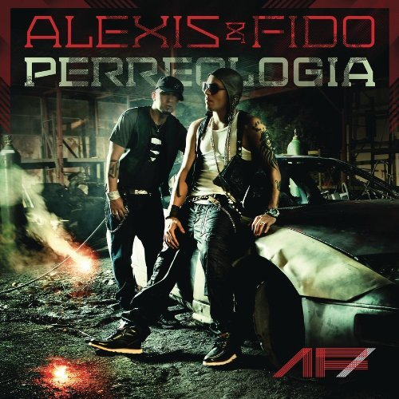
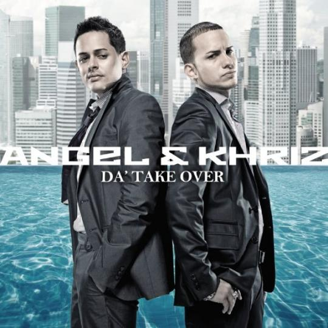
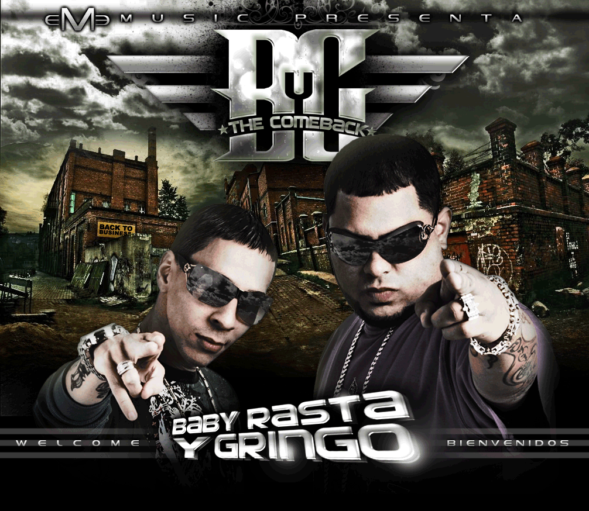
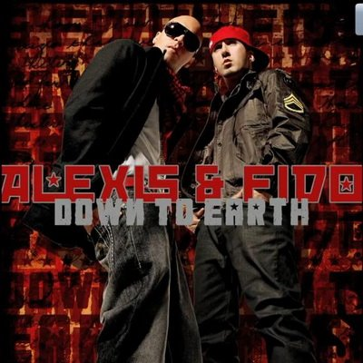
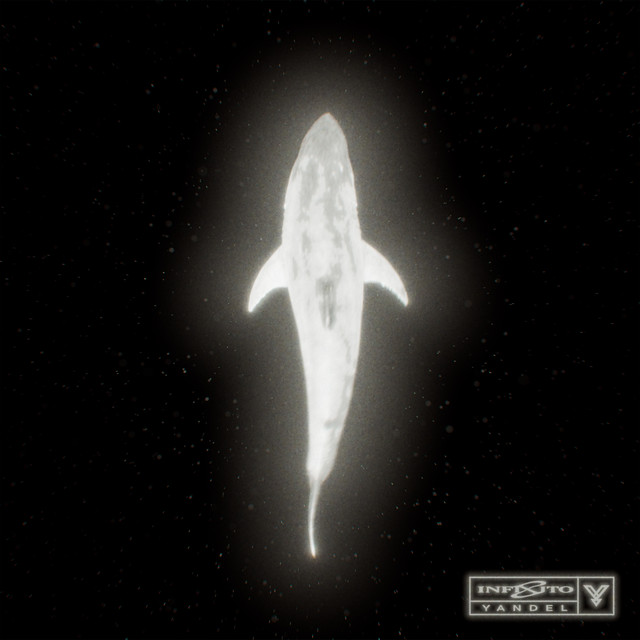

Somos un sitio web dedicado netamente al mundo de la musica reggaeton
Hemos colocado una larga lista de todos los discos que hasta la fecha se conocen en el genero.
Discos Disponibles

Alexy y Fido - Perreologia

Angel y Khriz - Take Over
Baby Ranks - Mi Flow
Arcangel - Metalicos Old 18+

Baby Rasta y Gringo-The ComebackAlex Corolla - Presenta

Alexis y Fido - Down to Earth

YANDEL - INFINITO 2026
Lista de CDs / OLD SCHOOL 1990 - 2000
3-2 Get Funky
357 The Criminal Mind Clan 1997
Alberto Style - El Vacilon
ALEX GARGOLAS 1,2 y 3
Apocalipsis Boricua 1999
Aguadilla LIVE TAPE - 1997
Baby 69 1999
Baby Cat 1 1995
Baby Rasta & Gringo - My New Prophesy (1998)
Bando Korrupto, No Creemos En Nadie (1998)
Barbosa Presenta - Rebeldia (2001)
BEAT STREET 1997
BEBE - THE OTHER SIDE
BENNY BLANCO - TIERRA DE NADIE
BIG BOY - HE CHOCADO CON LA VIDA
BIG BOY - MIS OJOS LLORAN POR TI 1996
BIG BOY - THE PHENOMENON
BIG BOY - MR BIG 1996
Bolivian y Calvo-Looses Tracks-Bolivian R.I.P
Boricua Bomb Squad - Last Dayz
Boricua Guererro-First Kombat-(Mission Rap)-1997
Boricua Underground 3 (2001)
Brewley MC - Sigue Batiendo (1991)
Brewley MC La Introduccion Ahora Es Mi Tiempo (1990)
Brewley MC-El Sida Rap-(Single)-1989
Coo-Kee y Ebano - Presentan Sin Fines de Lucro Vol 1,2,3,4,5,6
CRAZY BORICUAS 1 y 2
Da Hits - Story 1996
Da Concert 2
Da Moda
DADDY YANKEE - EL CARTEL 1 y 2
Darwin The Music 1 y 2
DEMBOW 98
DeeJay - Mad Reggaeton Vol.1
DINASTIA VOL 1
DJ ADAM - MAD JAM 1 y 2
Dj Adam y Dj Guichy - Reclamando Territorio
Dj Anqueira - Stargate 1 y 2
Dj Blass - Lagrimas y Risas 2004
Dj Blass Aliados Al Escuadron
Dj Charlie - Los Fujitivos
Dj Chiclin - Los Mas Buscados
Dj Chiclin - Narcomujeriegos
Dj Chiclin - U Records 1, 2, 3, 4, 5
Dj Chiclin 5 Sin Clemencia
Dj Chiclin U Records Vol. 3-Reggae Jam Mix-1995
DJ Chico Presenta Los Escurridizos (2002)
Dj Black Volumen 1 - Strictly Black 1995
Dj Blass - Sandunguero 1 y 2
Dj Chiclin Vol.6 - Welcome To The New Game 1998
Dj Crane y Piro JM Street Madeness 1995
DJ DICKY - NO FEAR LIVE 1998
DJ DICKY - NO FEAR 1, 2, y 3
DJ Dynamite - Sonido Bestial (1996)
DJ Eric Industry Vol. 3-Eric Industry-1995
DJ Eric Industry Vol. 4-The Return-1997
DJ Eric Industry Vol.5 - Coming to Attack (1998)
DJ Eric Industry-The History-2004
DJ Eric Presenta-La Busqueda-2002
DJ Eric-Street Style Vol. 1 (Coming At'Cha)-1994
DJ Eric-Street Style Vol. 2-(Tocalo Para Que Veas)-1995
Dj Eric - La Industria ALL STARS
Dj Flavor - Flavor 2000
Dj Flavor 5 Taste The Flavor
Dj Frank Presenta Ghetto Style
Dj Goldy Da Bomb
Dj Goldy The Dream Team
DJ Guichy - Straight From The Ghetto (1996)
Dj Joe El Escuadron del Panico 5 y 6
Dj Joe Fatal Fantasy 1, 2 y 3
Dj Joe Los Mas Buscados
DJ Joe Presenta-Rican Muffing 1996
DJ Joe Vol. 1 - Underground Music (1994)
DJ Joe Vol. 2 - Underground Masters (1994)
DJ Joe Vol. 3 - Aplastando (1996)
Dj Joe Vol. 4- Todo Como Antes 4 (1997)
DJ JOEL BRUTAL
DJ Negro-Quiero Un Amor-1994
DJ Nelson Presenta Reggaeton Live Vol. 1-1996
DJ Playero & Nico Canada (1997) - Boricua Guerrero The E.P
Dj Nelson - Big Bam Blunt 1995
Dj Nelson - The Flow Sweet Dreams
Dj Issa - Liberacion Vol.1 1995
Dj Klan - Tha Arrival 1998
Dj MR. G Rebel Masters Limited Edition 2001
DJ STEFANO 1, 2, 3, 4, 5, 6, y 7
Dj Razza - B 1999
Dj Tito Ham - Presenta Reggae Masters 1995
Don Chezina - Bien Guillao de Ganster (1997)
Eddie Dee - Amor Mio (1998)
EZD The Black Dragon (1995)
EZD The Black Dragon Squad (1996)
El General - El Poder del General 1992
Face Off - Abriendo Puertas
Falo - En Guerra (1997)
Falo - La Historia del Underground (1999)
Frankie Boy - Oh My God Se Paso de Raya 1996
FUNKY FEVER 1998
GABY - VENGO A MIL
GANDARA LIVE 1996
GENESIS 1996
GRAYSKULL 1 ABUSANDO 2001
GRAYSKULL 2 NO ES FACIL 2002
GUERRA EN TARIMA LIVE INDUSTRIA Vs JINETES 1999
GUERRA EN TARIMA 2 2001
GRINGO - Donde Lo Conseguiste 1992
Guerreros En Tarima 2000
HIPSNOSIS 14 KILATES
IVY QUEEN - EN MI IMPERIO
Holding On Home T Cocoa Tea and Shabba Ranks
Kid Power Posse
Kid Power Posse - Double Impact (1994)
Kid Power Posse - Greatest Hits (15 Years Later)
Kid Power Posse - Los Nenes De La Medicina
Kid Power Posse - No More Games [1993]
Kid Power Posse - Renacimiento
Kid Power Posse - The Medicine
K2 YOUNG - K2 2011
LA CONFRONTACION - ANTIGUAS LEGACY
LA FURIA - REGGAE RAP 1997
LATINO POWER - RAP REGGAE 1995
Little Boys From Da Underground 1 (1995)
Little Boys From Da Underground 3 (1996)
LOS DONS 1998
LOS JINETES D ELA MUERTE
Los Sacrilegios 1990
Maicol & Manuel - D Underground (1996)
Maicol & Manuel (No Hay Ley) (1999)
MANSION CREW - TODOS CONTRA TODOS
MC CEJAS - LUZ SOLAR 1997
MC CEJAS - TODO HA CAMBIADO
Mad Lion - Own Destiny VLS 1995
MAESTRO - LA COMISION 2002
MC Come to the Danza 1996
MC STOP REGGAE 1995
MELAZA FACTORY
MEMO Y VALE - MUNDO REVELDE 1997
MEMO Y VALE - RITMO D ELA COSTA 1998
MEMO Y VALE - SUEÑOS DE DESTRUCCION
Mister Dino 1996
NICKY JAM - DISTINTO A LOS DEMAS
Nico Canada - Reggaetronica
Nico Canada Desde La Vieja Guardia (1997)
Nico Canada Vol. 3-Beat Master-2001
Nico Canada Vol.1
Nico Canada-Happy Hours, Vol. 1-2011
Noztra - Conteo Regresivo (Before Ya' Ain't Ready) (2005)
One Team Music Presenta Knockout
Orlys - El Mas Pegao Vol 1
Og Black & Q Mac Daddy - Bajo Tu Observacion
Original Q - Carta a los Liricos
Pacho&Krugger - Tha Bulbas
Playero 37 Underground 1992 CD 1 Y CD 2
Playero 38 - Underground (1993)
Playero 39 - Respect (1995)
Playero 40 - New Era (1996)
Playero 41 PARTE 1 y Parte 2
Playero DJ Exitos '95 (17th Anniversary Underground Reggaeton Edition) (2012
Playero Greatest Hits-Street Mix 1-1995
Presuntos Implacables1998
Prime Underground 5 Zandungueo Total (1999)
Prime Underground 1, 2, 3 y 4
Proyecto X-Top Secret Vol. 1-1998
Raices Radikales (1994)
Rap En Español-1991
Ranking Stone-Atrevido-1994
Ranking Stone-Different Styles-1995
Reggae Style-1997
Reggae 4U - (1995)
Royal Family 2000
Rubio y Joel - Gritos de guerra
Rubio y Joel - Los Capos de la Lirica
Ruff Reggae 1998
Ruben DJ - Planeta Platano (1995)
Shabba Ranks- Loverman-1999
Sazon Con Flavor Vol.1 - Con Culeo y Bichoteo
Spanglish Roots 'N Hall-1999
Sentencia-With God Help-1997
Shanghai Assassinz-Viequez (1999)
Sun Dem Bow - Legacy [1998]
SLOWMOTION
TAGWUT
TABU 1997
Taino-Con Mi Corona-1995
Tempo - Spanish People In Control (1997)
Tha Crew 1, 2 y 3
The Brains 1997
The Cream 1, 2, 3 y 4
THE LEGENDS
THE MELODY 3 DJ GOLDY
THE NOISE CD 1 al CD 9
THE WARRIORS 1
Tony Touch - Reggae 23 TAPE 1993
Tony Touch 50 CD 2
Tony_Touch-50_M.C.s-Power_Cypha_3-(Tape_60)-(The_Grand_Finale)-1999
Trebol Clan - Los Genios Musicales (2000)
WEST UNDAGROUND 1995
WHITE LION RAP y REGGAE ALLS STARS 1996
WILFRED LA GANGA - LA OTRA CARA DEL RAP 1991
WISO G - AQUI ESTOY 1996
WISO G - SIN PARAR 1993
Vico C-Promo-1994
Vico C - EMBOSCADA 2002
Lista de CDs / 2000 - 2010
Alberto Style - Dueños de la Disco
Alberto Style - Rebuleando Con Estilo
Alexis y Fido - Los Pitbulls
Alexis y Fido - Sobrenatural 2007
Andy Boy - Antesala
Andy Boy - Marroneo Con Flow 2008
Arcangel - K-Libre
Arcangel - La Maravilla 2008
ASESINO - Fiel a la Guerra
Babilonia - Varios Artistas
Baby Rasta - La Ultima Risa
Baby Rasta y Gringo - Romances del Ruido 1
Baby Rasta y Gringo - Romances del Ruido 2
Baby Rasta y Gringo - Sentenciados 2004
Back To Reality 1
Back To Reality 2
Bando Korrupto 2
Bandoleros Realoded CD 1
Bandoleros Realoded CD 2
Barbosa LIVE 1
BEBE - Entre Reyes de Reyes
Benny Blanco - Tierra de Nadie
BIG BOY - EL COMEBACK
BIMBO 100X35
Bimbo El Oso Mañoso - Mas Suelto Que Nunca
BLIND BLIND MUSIC 2004
BORICUA NY
BORICUA NY 2
Buddhas Family - Desde La Prision CD 1
Buddhas Family - Desde La Prision CD 2
Buddhas Family 1
Caribbean Conection
Casa De Leones CD 1
Casa De Leones CD 2
Cavalucci - Cabalogia
Charlie Boy Y Dannix - Talento y Melodia
Chosen Few 2
Chosen Few 2004
Chino Nyno
Comenzo La Accion 2006
Cosculluela Knockout (Demo)
Crew Flavor Studio Calle 2
CHEKA - THE SCORE
D' Untouchables
Da' Fame CD1
Da' Fame CD2
Da Fuxion
Da Movie La Pelicula
Daddy Yankee - Barrio Fino 2004
Daddy Yankee - El Cangri
Daddy Yankee - Los Hummerunnes
Daddy Yankee - The Big Boss El Cartel 3 2007
Daddy Yankee - NO MERCY
David D'Ambulante - Los Titerones
David D'Ambulante - Under Grammy's
De Platino I - El Verdadero Bling Bling (2004)
De Platino II (2004)
DELFIN - El Verdadero Flow
Desafio
Despertando Conciencia 1
Despertando Conciencia 2
Destruccion Total
Diamond Flow - Rompiendo La ley
Divino - Todo a su Tiempo 2004
Dj Anqueira - Innovando
Dj Blass y Rey Pirin - Nuevas Criaturas
Dj Blaster - Contra Todos 2005
Dj Blaster - La Verdad
Dj Dice - New Millenium
DJ DICKY - NO FEAR 4
DJ DICKY - NO FEAR 5
DJ DICKY - Tiro Al Blanco 2008
Dj Dynamite - Los Gigolos 2005
Dj Eric - LA SAGA 2003
Dj Frank - TIME TO KILL 1
Dj Frank - TIME TO KILL 2
Dj Goldy - EL DESORDEN 4
Dj Joe - Abusando del Genero
Dj Kalin - Sueños de Grandeza
Dj MEMO - LA REVOLUCION
DJ NELSON - Flow La Diskoteca 2
DJ NELSON - La Discoteka 1
DJ NELSON - Los Elegidos
Dj Pablo Presenta Jey - Mi Recompensa [2007]
Dj Reflex - Metamorfosis
Dj Reflex - Rampleteo
Dj Reinaldo - DA FLEX
Don Chezina Presents - Don Fichureo
Don Dinero - AHORA QUE SI 2005
Don Dinero - El Ultimo Guerrero
DON MIGUELO - Contra El Tiempo 2006
DON OMAR - KING OF KINGS
DON OMAR - THE LAST DON
EDDIE DEE - El Terrorista dela Lirica
Eliel - El Dueño de los Metales
El Imperio - CODE RED 2004
El Juego Malcriado 2003
El Mundo de Plan B - Los que la Montan
El Nuevo Gobierno
El Pentagono 2007
El Pueblo-Del Pueblo Pa'l Pueblo
ELIEL - El Q Habla Con Las Manos
ELIEL - Greatest Beats
Escorpiones
Evolucion 2003
FACE OFF - EL ACONTECIMIENTO 2006
FALO - Subiendo la Adrenalina
Fatal Fantasy Edicion Especial 2004
Felito El Caballote - Tha Crew 4 Cruzando El Charco CD 1
Felito El Caballote - Tha Crew 4 Cruzando El Charco CD 2
Francotiradores 1
Francotiradores 2
Gallego - Teatro de Barrio
GARGOLAS 4
GARGOLAS 5
Getto y Gaztam - VIDA ETERNA
GLORY - GLOU 2005
Gold2Flow - Mi Sueño 2006
Golpe de Estado
Gringo - El Independiente 2007
GROUND ZERO - EL NUEVO COMIENZO
GUATAUBA 2000
GUATAUBA GUATAGATO
GUATAUBA SAZON 2004
Guatauba University 2007
Hector & Tito 2001 - Los de Antes (320kbps)
Hector & Tito - A la Reconquista
Hector & Tito - Violencia Musical)
IMPERIO URBANO
Ivy Queen - Diva Platinum Edition
Ivy Queen - REAL
Ivy Queen - Sentimiento
Ivy Queen&Gran Omar - CosaNostra (2006)
J Balvin - REAL
JANGUEO 2005
JAY-D - Sentimientos
JOHN ERIC - El Peso Completo 2005
Johnny Prez - El Dragon
Johny Prez - KNOCK OUT 2007
Johny Prez - The Prezident 2005
Jomar - Presents KOLABO 2004
KAREL Y VOLTIO - Dueños dela Disco
KasaBlanca - El Hogar del Castigo
Khriz&Angel - Los Mvp
Khriz&Angel - Los Mvp 2004
Khriz&Angel - ShowTime 2008
Khriz&Angel - The Grand Slam 2005
KILATES 1
KILATES 2
Kino Ranking - A Otro Nivel
Kino Ranking - Rankiaera
K-NARIAS - 40 Entre las 2
La Conspiracion 1 - CLASE CLOSED
La Conspiracion 2 - LA SECUELA
LA FAMILIA 2005
LA FRANQUICIA 2006
LA INVASION 2007
La Kalle Vol. 1 2006 New
La Melodia dela Calle 2008
LA MISION 1 Y 2
LA MISION 3
LA TEORIA 29-9
LA VOZ Y EL MARRONEO
LAS 9 PLAGAS
LAS 9 PLAGAS - LA EPIDEMIA
LEALTAD
LITO Y POLACO - FUERA DE SERIE
LITO Y POLACO - Los Tres Mosqueteros
LITO Y POLACO - Masacre de MCs
LITO Y POLACO - Mundo Frio
Los 12 DISCUPULOS
Los 14 Guerreros
Los Abusadores
Los Anormales
Los Bacatranes
Los Bambalanes 2004
Los Benjamins 2006
LOS BRAVOS
LOS BROTHERS
Los Caballotes del Genero
Los Cazadores - Primera Busqueda
Los Compadres 2006
NOSTRA Presenta - Los Dueños del Flow 2006
Los Kambumbos 2005
Los K-Becillas
Los Mas Sueltos
Los Matadores del Genero
Los Mero Meros
Los Mozalbetes
Los Nuevos Diamantes
Los Rebuleros 2005
Los Rompecorazones
Los Rompediscotekas
Los Sicarios
Los Sopranos
Los Titeretes 2007
Los Veteranos
Los Veteranos Collection - La Verdadera Historia del Reggaeton 2008 Parte 1
Los Veteranos del Reggaeton Collection
Luny Tunes - La Mision Vol.4 The Take Over 2004
Luny Tunes - La Trayectoria
Maestro - Special Request 2004
Magnate - Progresivo 2007
Magnate y Valentino - Sin Limites
Maicol y Manuel - Jakaleo
Maicol y Manuel - Jake Mate
Majestic 1
Majestic 2
Mas Flow 1
Mas Flow 2
Masta Flow
Masterpiece
MC Cejas - Boricuas State of Mind
Mexicano - El Colmo de los Fugitivos
Mexicano - Entre el Bien y el Mal
Mexicano - Gods Assains
Mexicano - Pa la Calle
Mickey Perfecto - Cuando el Silencio Hace Ruido 2007
Mickety Perfecto - Evolucion Arrestada
Miguel Play - EN Efectivo
Miguelito - El Heredero 2007
Miguelito - Mas Grande Que Tu
Millenium 2007
Mundo Demente 2006
Nando - Los Bravos 2007
New Soldiers 2007
Nicky Jam - Haciendo Escante
Nicky Jam - Salon de la Fama
Nicky Jam - The Black Carpet
Nicky Jam - Vida Escante
Nieto y Face - La Comision 2004
Nigga Flex - Te Quiero
No Mercy 2006
NORIEGA - CONTRA LA CORRIENTE 2004
NORIEGA - Sin Control 2006
NOTCH - Raised By The People 2007
Ñejo y Dalmata - Broke and Famous 2007
Ñengo Flow - Flow Callejero
Pacho & Krugger - Los Negritos del Momento
PERREKE - ONE TIME MUSIC 2006
RADIO VERSION 2000
Raices del Reggaeton
Rakim & Ken-Y Mix (2004)
Ranking Stone - Al Rescate 2006
Ranking Stone - Censurado
Rebeldia CD1 - CD2
Reencarnacion
REGGAETON CREW 2007
REGGAETON CREW - BLACK SEPTEMBER
REGGAETON NITIDO
REGGAETON NOTORIUS 2006
REGGAETON POWER
REGGAETON RULES VOL. 1
Rey Pirin - Kruel Intentions
Ro-k y Gammy - Malas Mañas
ROLEXX
SABOTAGE 2004
Salvando al Genero 2008
Sandunga Music 2006
Sangre Nueva CD1 - CD2
SANGRE NUEVA SPECIAL EDITION
SIN RIVALES
Sir Speedy - Dando Cocotazos
Sir Speedy - Nueva Generacion
Supremacia
TEMPO - EXITOS
TEMPO - GAME OVER 1999
TEMPO - NEW GAME 2000
TEMPO - LIVE IN PONCE
TEMPO - UNPLUGGED
TAINO - Sin Censura 2005
TAINO - THE FUTURE 2007
TEGO CALDERON - El Abayarde
TEGO CALDERON - The Underdog
TEGO CALDERON - Enemy de los Guasibiris
The Bad Boy Most Wanted CD2
The Benjamins - La Continuacion 2007
THE COMPANY
THE DRAFT 2005
THE GODFATHER
THE IMPACT
THE MOSA PROJECT
The Next Level 2004
THE NOISE 10 2004
The Warriors Vol.4 - Los 14 Guerreros (2003) 320kBPS
Titanes del Reggaeton
TITO EL BAMBINO - Its My Time 2007
TITO EL BAMBINO - TOP OF THE LINE 2006
Tony Haze & Shaka Black - No Hay Mas Na q Hablar
TONY TOUCH - Reggaetony 1 Y 2
Tributo Urbano a Hector LAVOE 2007
TRIVALES - ENTRANDO AL JUEGO
VICO-C - AQUELL QUE HABIA MUERTO
VICO-C - DESAHOGO 2005
VICO-C - EN HONOR A LA VERDAD
VOLTIO -EN LO CLARO 2007
VOLTIO - VOLTAGE AC
WARRIORS 3 - LOS MAGNIFICOS
Wise - Da Ganstan Da Classic
WISIN - EL SOBREVIVIENTE
WISIN Y YANDEL - DE OTRA MANERA
WISIN Y YANDEL - DE VIEJOS A NUEVOS
WISIN Y YANDEL - LOS EXTRATERRESTRES
WISIN Y YANDEL - LOS REYES DEL MILENIO
WISIN Y YANDEL - MI VIDA
WISIN Y YANDEL - LOS VAQUEROS
Yaga y Mackie Ranks - Clase Aparte 2004
Yaga y Mackie Ranks - LA MODA 2005
Yaga y Mackie Ranks - La Reunion 2007
Yaga y Mackie Ranks - SONANDO DIFERENTE
YAMIL - EL COLOR DEL DINERO
YANDEL - QUIEN CONTRA MI
YANURI - Major League (I'M The Message)
ZION - THE PERFECT MELODY 2007
ZION Y LENNOX - Motivando a la Yal Special Edition
ZION Y LENNOX - Motivando a la Yal
Lista de CDs / 2010 - 2020
BIMBO - La Calle Decide 2010
Cruzito - The Platinum Chronicles (The Lost Tape) (2010)
Don Omar - Meet The Orphans (Deluxe Edition) (2010)
Dylan & Lenny - My World (2010)
Farruko-El Talento Del Bloque (2010)
J-King & Maximan - Los Superheroes (2010)
Jowell & Randy - El Momento (2010)
Las Ovejas Negras - Subterraneo (2010)
Mega & Kenai - Los Del Futuro (2010)
Ñengo Flow - Street Lord (2010)
Pachino El Galapso - El Bajo Musical (2010)
Yaga Y Mackie - Los Mackiavelikos (Astronauta Edition) (2010)
Armados y Peligrosos (Full Records) (2011)
Cavalucci Business Presenta Los Rompe Puntos (2011)
Gadiel - 5 Estrellas (The Mixtape)(2011)
Gocho - Mi Musica 2011
MJ - Conexión MJ [2011] PROMO
Mr. Frank Presenta Blow Family (2011)
Nely El Arma Secreta - Decisiones & Consecuencias (2011)
Nova & Jory - Mucha Calidad (2011)
RAKIM Y KEN Y - FOREVER (CD 2011)
Ruben San 'El Blaka' - Otra Dimension (Elegua Music) [2011]
Tito El Bambino - Invencible (CD 2011)
Wisin & Yandel - Los Vaqueros (El Regreso) (2011)
Alberto Stylee - The Reborn (2012)
Cosculluela - War Kingz (2012)
Alex Kyza - Street King (The Mixtape)
Cosculluela El Niño (2012)
D Ozi - Torre De Control (2012)
Don Omar Presents - MTO 2 (New Generation) (2012)
El Imperio Nazza (Gold Edition) (2012)
Fuego - La Musica Del Futuro Reloaded (The Chosen Few Edition) (2012)
Galante El Emperador - Tu Juguetito Sexual 2012
Ivy Queen - Musa (2012)
J Alvarez - Otro Nivel De Música (CD 2012)
Klaze y Eztylo - Por Ahi Vienen Los Gavilanes ( MixTape )
Nico Canada Presenta - Alo Under Vol. 1 (2012)
Nico Canada Vol.1 CD 2 (2012)
Ñengo Flow - RealG4Life 2.5 (CD)(2012)
Ñengo Flow – RealG4Life 2012
Pina Records Presenta La Formula (2012)
Tito El Bambino – Invicto (2012)
Wisin & Yandel - Los Lideres (2012)
Yaga & Mackie - Los Mackieavelikos HD (2012)
Yumac Music & Polakan Presenta - El Periódico Musical (2012)
8MM Unreleased (Lo Que Nunca Salio) (2013)
Alexis & Fido - La Esencia (2014)
Anonimus - El Anonimato (2013)
Arcangel - Sentimiento,Elegancia Y Malda (2013)
Back To The Underground - Frankie Boy Edition (2013)
Back To The Underground Polakan - Polakan Edition (2013)
Benyo - The Multi (2013)
Boy Wonder Presents Chosen Few Urbano Continues (2013)
Carlitos Rossy - Desde El Blocke (2014)
Carlitos Rossy - Sonido Distinto (Deluxe Edition) (2013)
Carnal - ReenCarnal (2013)
Cheka - El Que Canta y Hace Pistas Vol 1 (Old School Edition)
Chosen Few Urbano 2014
Chris G - El Soldado (2012)
Chris G - Sweet Move ''G'' (2013)
Daddy Yankee - King Daddy (2013)
De La Ghetto - Geezy Boyz (The Album) (2013)
Delirious - Contagious (2013)
DJ Dicky - El De Las Manos Magicas (Underground Edition) (2014)
Don Chezina - It's The Don (2013)
El Batallon - Evolucion (2013)
Eme Carrion - We Run This Shit (2014)
Fade El Que Pone La Presion - Mi Historia (2013) CD 1 y CD 1
Farruko - Imperio Nazza (Farruko Edition) (2013)
Galante (Sexy Edition) (2013)
Gaona - La Mina De Oro (2013)
Gastam - Solo (2013)
Gotay - El Del Vibrato (2013)
Gran Chester - General Invation (2013)
Guelo Star - Yums 2 (2013)
J Alvarez Presenta 1K El Futuro (The Álbum) (2013)
J Alvarez - De Camino Pa La Cima (Deluxe Edition) (2014)
J Balvin - La Familia (2013)
Jamsha - El Rey De Las Yales (2013)
Javy - Nueva Etapa (2013)
Jayko El Prototipo - El Futuro Tuyo, Es El Presente Mio (2014)
Jayko El Prototype - Prototype (2013)
J-King & Maximan - Los Sucesores (2013)
John Jay - La Dinastía (Vol. 1) (2013)
Jowell & Randy - Doxis Edition (2013)
Jowell & Randy - Sobredoxis (2013)
JQ Mr Under - Mr Under (2014)
Kastrofobia - L.M.T (Latin Musik Trafficantz) (The Mixtape)
Lapiz Conciente – Lapiz Historias Vol.3 (Album)
Limi-T 21 - Party & Dance (2013)
Lito MC Cassidy - Prologo a Historias de La Calle (2013)
Magnate y Valentino Los Imparables (2013)
Maximus Wel - El Del Power (2013)
Maicol & Manuel - Yakaliando Edition (Back To The Underground) (2013)
MC Ceja - Como Antes (2013)
MESSIAH Malicia con Sentido (2013)
Mr. Frank & Gabyson – The Album (2013)
Musicologo & Menes - Los De La Nazza (The Collection Vol 1) (2013)
Musicologo Y Menes - Imperio Nazza Top Secret (2014)
Nan2 - Soldados De La Nueva Era Vol 1 (2013)
OG Black – El Francotirador Edition (2013)
OG Black - Imparable (2013)
Opi The Hit Machine - Opilicious (The Mixtape) (2013)
Pacho & Cirilo - Los Dueños De La Calle Con Humildad Y Respeto (2013)
Prince Royce - Soy El Mismo (2013)
Tempo - Free Music (2013)
Welo Fama & Sabio Phill – Los Troses (2014)
Wisin - El Regreso Del Sobreviviente (2014)
Yandel - De Lider A Leyenda (2013)
ACA La Melodia - The Hidden Talent (2014)
AG La Voz - The Collector (2014)
Alex Fatt-Humildon-(Puri Time Edition)-2013
Back To The Underground - Wiso G Edition (2014)
Benny Benni - Reggaeton Y Calle (2014)
Big Mato Lo Real Vol. 1 2007
Carlitos Rossy - The Mansion (2014)
D.OZi - El Suero De La Calle (2014)
Daddy Yankee - El Cartel 2 - Los Cangris Edicion Limitada (2001)
Dalmata – Dalmata Collection (2014)
Delio Y Misterio - Mas Real Que Nunca (The Album) (2014)
DJ Dicky-La Boveda-2014
DJ Nelson-A Ti Te Gusta El Ron-2009
Don Chezina - Miles De Ideas (2014)
Don Dinero-Year of the Mobsta-2014
DyO Los MoneyMakers - Primer Ataque (First Attack) (2014)
Eddy Lover - Perdóname (iTunes) (2008)
El Army - Nueva Era (2014)
El Gran Jaypee - Underground A Lo Doble Paso (2014)
El Roockie-King of Lyrics-2009
Elio Mafiaboy -El Original (2014)
Eloy El Comienzo 2014
Farruko Presenta Los Menores (2014)
Fuego - Fireboy Forever (2014)
Gabo El De La Comision - Pre-Comission (2014)
Galante El Emperador - El Inmortal (2014)
Genio Records Presenta Los Padrotes-2007
Ghetto 3.16 II-La Otra Cara-2000
Getto - Buddhas Family Edition (2014)
J Balvin - La Familia B Sides (2014)
Jamsha - Melasofico (Cyber Disco Vol. 4)
Joey Montana - Unico (Album) (2014)
Juan Magan - The King Is Back Vol 1 (2014)
Kario & Yaret Y Fabula Music – Cambio De Mando (The Álbum) (2014)
Kenai - Mi Antesala (EP) (2014)
Lui-G 21 Plus - In Business (2014)
Montana The Producer Presenta Sentimiento de Un Artista (The Album)
Mr. Frank y Gabyson - Estamos Rompiendo (2014)
Nico Canada-Happy Hours, Vol. 1-2011
Ñejo - Yo Soy La Fama (2014)
Pachino El Galapso-The Puerto Rican Idol-2014
Perreke - La Makinaria Vol. 1 - 2 (2014)
Perreke & One Team Music Presents - Double Team CD Of Duo's (2007)
Plan B - Love And Sex (2014)
Reggaeton Pal Bloque-2006
Rey Pirin-Back To Da Game-2013
Ruben San-Los Fabulosos Exitos-1997
Tito El Bambino – Alta Jerarquía (2014)
Tony Lenta - Momento Perfecto (2014)
Various Artists - El Imperio Nazza Top Secret (iTunes) (2014)
Various Artists - Wisin & Yandel & Amigos (iTunes) (2014)
Watussi - La Revelacion Del Under (2013)
Wise The Gold Pen - 1ra Parte (2014)
Yampi - El Yamposo 24 Kilates Edition (2014)
Yandel - Legacy (De Lider A Leyenda) (2014)
 Turboreggaeton
Turboreggaeton